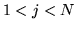
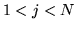
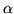
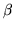
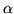
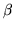
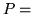

Baum-Welch training is similar to the Viterbi training described
in the previous section except that the hard boundary implied
by the function is replaced by a soft boundary
function  which represents the probability of an observation being
associated any given Gaussian mixture component.
This occupation probability is computed from the forward
and backward probabilities.
which represents the probability of an observation being
associated any given Gaussian mixture component.
This occupation probability is computed from the forward
and backward probabilities.
For the isolated-unit style of training, the forward
probability
 for  and
is calculated by the forward recursion
for  and
is calculated by the forward recursion
The backward probability
for  and
is
calculated by the backward recursion
and
is
calculated by the backward recursion

In the case of embedded training where the HMM spanning the observations
is a composite constructed by concatenating  subword models, it is
assumed that at time
subword models, it is
assumed that at time  , the  and 
values corresponding to the entry state and exit states of a HMM
represent the forward and backward probabilities at time
and
, the  and 
values corresponding to the entry state and exit states of a HMM
represent the forward and backward probabilities at time
and
 , respectively, where is small. The equations
for calculating and are then as follows.
, respectively, where is small. The equations
for calculating and are then as follows.
For the forward probability, the initial conditions are established at time as follows

The total probability  prob can be computed from either the forward or backward probabilities